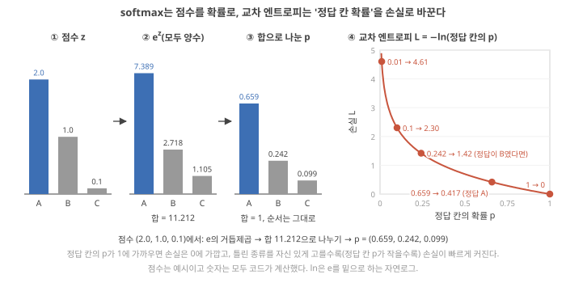
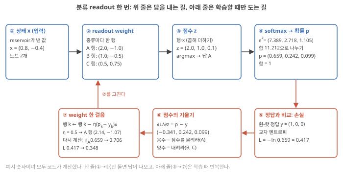
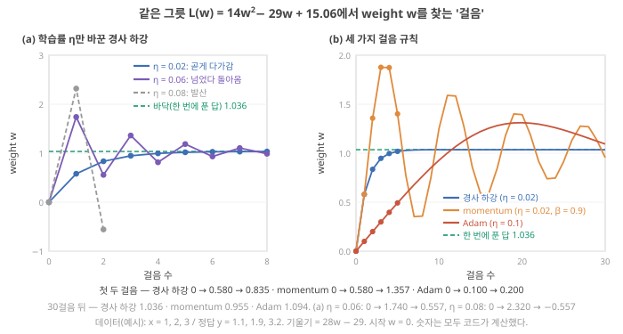
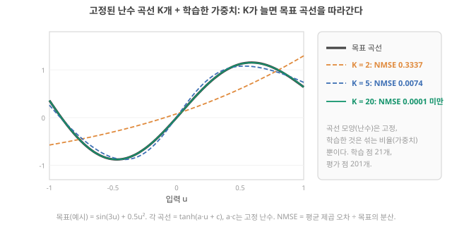

Day 14. 분류 readout과 학습 방법, 고정해도 되는 이유
Phase 2 · RC는 왜, 어떻게 작동하는가
이번 질문 분류에는 어떤 readout과 학습법을 쓰고, reservoir를 고정해도 되는 조건은 무엇인가?
왜 배우나 재료가 계산했다는 주장이 선형 readout 결과인지 판단한다.
오늘의 장면 상태 x → 종류별 점수 → softmax → argmax → 답
오늘 반드시 readout은 상태에 있는 것만 섞는다. 기억·비선형 섞임·다양함이 있고 선형 readout만으로 성능이 나와야 재료의 기여다.
나중에 봐도 됨 momentum·Adam 세부 · 학습률 발산 실험 · 오늘의 반론 기준선 숫자
넘어가는 기준 '오늘 반드시'를 내 말로 말할 수 있으면 충분합니다.
이후 쓰이는 곳 Day 17–20 비선형·다양성 · Day 21–22 실습 · Day 27–28 심전도 분류 · Day 29–30 기준선
지난 학습 복습
지난 학습 단위(Day 13 · state update와 readout 학습: 최소제곱에서 ridge까지)의 핵심을 다른 예로 확인합니다. 고르는 즉시 맞았는지와 이유가 보입니다. 틀려도 아래 학습자료는 그대로 열려 있고, 틀린 문제에는 다시 볼 곳이 붙습니다.
학습자료
5. 분류 readout과 학습의 두 길: softmax, 경사 하강, Adam
상황. 논문의 과제가 "정상 박동 대 부정맥" 같은 분류라면 readout의 출력은 숫자 하나가 아니라 종류별 점수입니다. 이 점수가 확률과 학습 신호가 되는 과정을 모르면 분류 정확도 표를 읽기 어렵습니다.
왜 지금? 앞에서는 readout의 정답이 숫자 하나일 때의 학습을 풀었습니다. 이제 정답이 "종류"일 때로 넓힙니다.
어디에 쓰이나? 논문의 softmax, cross-entropy, gradient descent, Adam이 각각 무엇을 정하는 말인지 구별해 읽을 때 씁니다.
끝나면 할 수 있는 것. 원-핫 정답·점수·argmax·softmax·교차 엔트로피를 점수 (2.0, 1.0, 0.1)로 직접 계산하고 각 단계가 무엇을 받아 무엇을 내는지 말할 수 있으며, readout을 학습하는 두 길(한 번에 푸는 ridge, 조금씩 내려가는 경사 하강)의 차이와 학습률이 너무 크면 무슨 일이 생기는지, RC에서 보통 ridge를 쓰는 이유를 말할 수 있다. Momentum·Adam은 경사 하강의 무엇을 바꾼 변형인지 한 줄씩 말할 수 있으면 충분하다(Adam의 계산 세부는 심화 접기에서 다시 볼 때).
지금까지 readout의 정답은 숫자 하나(예: 다음 순간의 신호값)였습니다. 그런데 device 논문의 과제는 대부분 분류입니다. "이 심장 박동은 정상인가 부정맥인가", "이 손동작은 네 가지 중 무엇인가". 답이 숫자가 아니라 종류일 때 readout이 무엇을 내는지를 먼저 보고, 그다음 readout을 학습하는 두 가지 길을 비교합니다.
새 이름이 다섯 개 나오므로 먼저 지도를 봅니다. 모두 같은 예(종류 A, B, C 세 개, 정답은 A)로 이어지고, 앞의 셋은 답을 낼 때마다, 뒤의 둘은 학습할 때만 씁니다. 손으로 할 수 있어야 하는 것은 원-핫 정답·점수·softmax·교차 엔트로피(분류 출력과 오차)와 경사 하강·학습률이고, momentum·Adam은 무엇을 바꾼 것인지까지만 잡습니다.
| 단계 | 하는 일 | 받는 것 | 내는 것 |
|---|---|---|---|
| ① 원-핫 정답 | 종류를 순서 없는 숫자로 적기 | 종류 이름 A | (1, 0, 0) |
| ② 점수와 argmax | 종류마다 "얼마나 그 종류 같은가"를 내고 가장 큰 것을 고르기 | 상태 \(x\) | 점수 (2.0, 1.0, 0.1) → 답 A |
| ③ softmax | 점수를 확률로 바꾸기 | 점수 | (0.659, 0.242, 0.099) |
| ④ 교차 엔트로피 | 얼마나 틀렸나를 숫자 하나로 (학습 때만) | 확률 + 원-핫 정답 | 손실 0.417 |
| ⑤ 경사 하강·momentum·Adam | 손실이 줄도록 weight를 조금씩 고치기 (학습 때만) | 손실의 기울기 | 새 weight |
분류 readout: 원-핫 정답, argmax, softmax, 교차 엔트로피
왜 필요한가. "부정맥 = 1, 정상 = 0"처럼 종류에 숫자를 붙이면 두 종류까지는 지금까지의 최소제곱·ridge 그대로 됩니다. 그러나 손동작이 네 종류일 때 "삼각형 = 1, N자 = 2, 역삼각형 = 3, Z자 = 4"로 붙이면, readout은 "N자(2)는 삼각형(1)과 역삼각형(3)의 중간"이라는 엉터리 순서를 배웁니다. 종류에는 순서가 없으니 다른 방법이 필요합니다.
원-핫 정답(one-hot). 종류 수만큼 칸을 만들고 맞는 칸만 1, 나머지는 0으로 적습니다. 종류가 셋(A, B, C)이면 A = (1, 0, 0), B = (0, 1, 0), C = (0, 0, 1). "칸 하나만 뜨겁다(hot)"는 뜻입니다. Readout은 종류마다 출력 하나씩, 즉 점수(score, 논문에서는 흔히 logit) 세 개를 냅니다. 종류마다 지금까지 본 선형 readout이 하나씩 있다고 보면 됩니다: 점수\(_k = \mathbf{w}_k \cdot \mathbf{x}\) (상태에 종류 \(k\)의 weight 행을 곱해 더한 값). 예: 상태가 \(x = (0.8, -0.4)\)이고 종류 A의 weight 행이 \((2.0, -1.0)\)이면 A의 점수는 \(2.0 \times 0.8 + (-1.0) \times (-0.4) = 1.6 + 0.4 = 2.0\). B 행 \((1.0, -0.5)\)이면 \(0.8 + 0.2 = 1.0\), C 행 \((0.5, 0.75)\)이면 \(0.4 - 0.3 = 0.1\). 이 점수 (2.0, 1.0, 0.1)을 아래에서 계속 씁니다. (실제로는 여기에 종류마다 상수 하나를 더하기도 합니다. 아래 Singh의 '아핀(affine)'이 그 뜻입니다.)
Argmax. 점수 중 가장 큰 칸의 번호를 답으로 고르는 규칙입니다. 점수가 (2.0, 1.0, 0.1)이면 첫째 칸이 가장 크니 답은 A. "가장 큰 것(max)의 자리(arg)"라는 뜻입니다.
Softmax: 점수를 확률로. 점수는 음수일 수도 있고 합이 1도 아니라 "얼마나 확신하나"를 말해 주지 못합니다. Softmax는 점수를 0과 1 사이, 합이 1인 숫자(확률)로 바꿉니다. 계산은 세 단계입니다.
- 점수마다 \(e^{\text{점수}}\)를 계산한다(\(e \approx 2.718\). \(e^{\text{점수}}\)는 항상 양수이고 점수가 클수록 빠르게 커진다): \(e^{2.0} = 7.389\), \(e^{1.0} = 2.718\), \(e^{0.1} = 1.105\).
- 다 더한다: \(7.389 + 2.718 + 1.105 = 11.212\).
- 각각을 합으로 나눈다: \(7.389/11.212 = 0.659\), \(2.718/11.212 = 0.242\), \(1.105/11.212 = 0.099\).
그림 읽는 법. 그림 10(a)–(c)는 위 세 단계를 막대로 그린 것입니다(파랑이 A). 막대 높이의 순서는 세 패널 모두 같고, (c)에서 합이 1이 됩니다. (d)는 아래 '교차 엔트로피'에서 씁니다. 가로축은 정답 칸의 확률, 세로축은 그때의 손실입니다.

결과 (0.659, 0.242, 0.099)는 합이 1이고, 순서는 점수와 같으며(argmax는 그대로 A), "A일 확률 약 66%"처럼 읽습니다. 세 단계를 식으로 쓰면
\[ p_k = \frac{e^{z_k}}{\sum_j e^{z_j}} \]
- 기호: \(z_k\)는 종류 \(k\)의 점수, \(p_k\)는 그 확률.
- 단위: 무차원. 0~1, 합이 1.
- 결과의 뜻: 점수 차이가 클수록 한 종류에 확률이 몰린다. 점수가 모두 같으면 모두 \(1/(\text{종류 수})\).
교차 엔트로피: 얼마나 틀렸나를 숫자 하나로. 학습하려면 최소제곱의 손실(오차 제곱의 합)처럼 "얼마나 틀렸나"가 숫자 하나로 필요합니다. 받는 것은 softmax 확률과 원-핫 정답, 내는 것은 손실 하나입니다. 규칙은 "정답 칸의 확률에 \(-\ln\)을 붙인다"입니다(\(\ln\)은 \(e\)를 밑으로 하는 자연로그(natural logarithm)). 정답이 A면 \(-\ln 0.659 = 0.417\), 정답이 B였다면 \(-\ln 0.242 = 1.42\). 정답 칸 확률이 1이면 \(-\ln 1 = 0\), 0.1이면 2.30, 0.01이면 4.61입니다. 그림 10(d)의 곡선이 이 숫자들을 이은 것이고, 오른쪽 끝(확률 1)에서 0이다가 왼쪽으로 갈수록 가파르게 올라갑니다. 곧 틀린 종류를 자신 있게 고를수록 손실이 크게 뜁니다. 이것이 교차 엔트로피(cross-entropy) 손실입니다. 원-핫 정답 \((y_A, y_B, y_C)\)로 쓰면 \(L = -(y_A \ln p_A + y_B \ln p_B + y_C \ln p_C)\)이고, 정답 칸만 1이라 그 한 항만 남습니다. 분류 readout을 학습할 때 최소제곱의 "오차 제곱" 대신 쓰는 경우가 많습니다.
학습에 쓰는 기울기: 확률 − 정답. 경사 하강을 하려면 손실의 기울기가 필요합니다. Softmax와 교차 엔트로피를 이어 붙이면 점수 \(z_k\)에 대한 기울기가 단순해집니다.
\[ \frac{\partial L}{\partial z_k} = p_k - y_k \]
- 기호: \(p_k\)는 softmax 확률, \(y_k\)는 원-핫 정답의 \(k\)번째 칸(0 또는 1).
- 작은 숫자로: \((0.659 - 1,\; 0.242 - 0,\; 0.099 - 0) = (-0.341, 0.242, 0.099)\). 음수인 A 점수는 올리고, 양수인 B·C 점수는 내리라는 뜻이다.
- 확인: \(z_A\)만 2.0에서 2.01로 올려 다시 계산하면 손실이 약 0.0034 줄어, 비율이 약 −0.34다. Day 11–12에서 기울기를 '조금 바꿔 본 변화의 비율'로 구한 것과 같은 방법이다. 이 확인 숫자는 Claude 계산
- Weight로 넘기기: 점수 \(z_k = w_{k,1} x_1 + w_{k,2} x_2\)이므로 Day 11–12의 연쇄 법칙대로 "점수의 기울기 × 그 weight에 곱해진 입력", 즉 \(\partial L/\partial w_{k,i} = (p_k - y_k)\,x_i\).
이 결과의 유도는 일반 교과 내용이며, Claude는 토론토대 CSC321 강의 노트(K. Swersky의 softmax 유도: 정답 칸 weight의 기울기 = (확률 − 1) × 입력, 다른 칸 = 확률 × 입력)와 대조했습니다(확인).
한 번 따라가기. 그림 11은 이 흐름 전체를 숫자로 한 번 돌린 것입니다. 위 줄(상태 → 점수 → 답·softmax)은 답을 낼 때마다, 아래 줄(손실 → 점수의 기울기 → weight 한 걸음)은 학습할 때만 돕니다. 한 걸음의 학습률 \(\eta\)는 Day 11–12에서 본 보폭이고(Day 11의 경사 하강 한 걸음), "weight ← weight − \(\eta\) × 기울기"를 그대로 씁니다. 한 걸음 뒤 정답 A의 확률이 0.659 → 0.706, 손실이 0.417 → 0.348로 바뀝니다.

RC에서는. Singh 2026은 물리 reservoir 자체를 평가할 때 선형 readout이 가장 분명한 기준이라며, 연속값 과제에는 ridge 회귀, 분류에는 다항 로지스틱(multinomial logistic) 또는 SoftMax 회귀 같은 아핀(곱해 더하고 상수를 더하는) 분류기를 쓸 수 있다고 씁니다. 이 경우 종류별 점수는 확률로 바꾸기 전까지는 reservoir 특징의 선형 함수이므로, readout이 숨은 비선형 특징 추출을 더하지 않는다. 더 복잡한 비선형 readout은 응용 시연에는 쓸 수 있지만, 그 성능만으로 재료의 계산 기여를 추론해서는 안 된다. Singh 2026, p.18 실제 예로, Singh이 소개하는 SnS device reservoir 사례(빛 펄스 열을 넣고 마지막 전류를 읽은 연구)는 분류 readout으로 SoftMax 회귀를 썼습니다. Singh 2026, p.16 더 간단하게는 원-핫 정답을 그대로 ridge 회귀로 맞추고 argmax로 고르는 방법도 흔합니다. 해석
점수가 (1.0, 0.0)인 두 종류 분류에서 softmax 확률은 얼마일까요? \(e^{1} = 2.718\), \(e^{0} = 1\)을 쓰세요. 첫 문제는 본문 (2.0, 1.0, 0.1)의 확인, 둘째는 일부 채우기, 셋째는 혼자 풀기입니다.
학습의 두 길. readout weight를 정하는 방법은 크게 둘입니다. Ridge처럼 한 번에 푸는 길과, Day 11–12처럼 조금씩 내려가는 길. Day 11–12의 경사 하강을 한 줄로 되짚으면, 기울기의 반대쪽으로 "학습률 × 기울기"만큼 옮기기를 반복하는 것이었습니다(\(w_{\text{새}} = w - \eta\, dL/dw\), 기울기).
Readout을 학습하는 두 길: 한 번에 푸는 ridge vs 조금씩 내려가는 경사 하강·momentum·Adam
왜 두 길이 있나. 손실이 최소제곱처럼 깔끔한 포물선이면 바닥을 공식으로 바로 풀 수 있습니다. 그러나 (1) softmax + 교차 엔트로피처럼 바닥을 공식으로 못 쓰는 손실(기울기 \(p - y = 0\)으로 놓아도 \(p\) 안에 \(e^{z}\)와 그 합의 나눗셈이 들어 있어, 최소제곱처럼 나눗셈 한 번으로 \(w\)를 꺼낼 수 없습니다. 일반 교과 내용), (2) 데이터가 너무 많아 한꺼번에 표 \(X\)를 만들 수 없을 때, (3) 데이터가 계속 들어와 그때그때 고쳐야 할 때(온라인 학습, online learning)는 조금씩 내려가는 수밖에 없습니다.
같은 문제로 비교. 걸음 규칙의 차이만 보이도록, 답을 이미 아는 세 표본 최소제곱의 그릇을 씁니다. 데이터 \(x = 1, 2, 3\), \(y = 1.1, 1.9, 3.2\), 손실 \(L(w) = 14w^2 - 29w + 15.06\)(앞의 세 표본 그릇). 기울기는 \(dL/dw = 2\sum(w x - y)x = 28w - 29\)입니다(\(28 = 2 \times \sum x^2\), \(29 = 2 \times \sum xy\)). 한 번에 푼 답은 \(w = 1.036\). 모든 규칙이 \(w = 0\)에서 출발합니다.
그림 읽는 법. 그림 12의 두 패널 모두 가로축은 걸음 수, 세로축은 그 걸음 뒤의 weight \(w\), 초록 점선은 한 번에 푼 답 1.036입니다. (a)는 경사 하강에서 학습률 \(\eta\)만 바꾼 것, (b)는 세 가지 걸음 규칙입니다. 아래에서 (a) → 경사 하강 → momentum → Adam 순서로 따라갑니다. 필수는 (a)의 학습률이고, (b)의 momentum·Adam은 "걸음 규칙이 다르면 경로가 다르다"만 보면 됩니다.

학습률만 바꾸면(그림 12(a)). 경사 하강의 한 걸음은 \(w \leftarrow w - \eta \times (28w - 29)\)입니다. 이것을 정리하면 "바닥까지의 거리"가 걸음마다 \((1 - 28\eta)\)배가 됩니다. \(\eta = 0.02\)이면 0.44배라 곧게 다가가고(0 → 0.580 → 0.835), \(\eta = 0.06\)이면 −0.68배라 바닥을 넘었다가 돌아오기를 반복하며 다가가고(0 → 1.740 → 0.557 → 1.361), \(\eta = 0.08\)이면 −1.24배라 넘을 때마다 더 멀리 튀어 발산(divergence)합니다(0 → 2.320 → −0.557 → 3.010). \(\eta = 1/28 \approx 0.036\)이면 첫 걸음에 바로 바닥입니다. Day 11–12의 경사 하강 예에서 보폭 0.5로 손실이 9에서 81로 나빠진 것(Day 11의 경사 하강 한 걸음)과 같은 현상이고, "학습률을 키우면 빨라진다"는 바닥을 넘지 않는 범위에서만 맞습니다. 그 범위는 그릇의 가파름(\(w^2\) 앞의 수)에 따라 달라서, 학습률은 손실마다 따로 골라야 합니다.
- 경사 하강(학습률 \(\eta = 0.02\)). 기억하는 것: 없음. 한 걸음: \(w \leftarrow w - \eta \times \text{기울기}\)(Day 11–12 그대로). 기울기 \(-29\) → \(w = 0 - 0.02 \times (-29) = 0.580\). 다음 기울기 \(28 \times 0.58 - 29 = -12.76\) → \(w = 0.580 + 0.255 = 0.835\). 바닥에 가까워질수록 기울기가 작아져 걸음도 짧아집니다.
- Momentum(관성, \(\eta = 0.02\), \(\beta = 0.9\)). 왜 필요한가: 경사 하강은 기울기가 작으면 걸음도 작아서, 기울기가 작지만 계속 같은 방향인 길고 완만한 비탈에서 아주 느립니다. 기억하는 것: 지난 기울기들을 쌓은 속도 \(v\)(언덕을 굴러 내려가는 공처럼). 한 걸음: \(v \leftarrow \beta v + \text{기울기}\), \(w \leftarrow w - \eta v\). 기울기가 매번 −1로 같다면 \(v\)는 −1 → −1.9 → −2.71 → −3.44 → …로 쌓여 −10에 다가가므로, 보폭이 경사 하강의 최대 10배(\(1/(1-\beta)\)배)까지 커집니다. (교재에 따라 \(\eta\)를 \(v\) 안에 넣어 쓰기도 합니다.) 이 그릇에서는 첫 걸음이 경사 하강과 같고(\(v = -29\), \(w = 0.580\)), 둘째 걸음은 \(v = 0.9 \times (-29) - 12.76 = -38.86\)이라 \(w = 0.580 + 0.777 = 1.357\). 바닥(1.036)을 지나쳐 버렸습니다. 관성은 평평하고 긴 골짜기에서 빨리 가게 해 주지만, 이렇게 출렁일 수 있습니다. PyTorch 문서와 대조
- Adam(\(\eta = 0.1\)). 왜 필요한가: weight마다 기울기 크기가 크게 다르면 학습률 하나로 모두를 맞출 수 없습니다. 예를 들어 두 weight의 기울기가 −29와 −0.029이면 경사 하강(\(\eta = 0.02\))의 걸음은 0.58과 0.00058로 1,000배 차이가 납니다. Adam은 둘 다 첫 걸음을 \(\eta\)만큼 갑니다. 기억하는 것: 기울기의 평균(방향)과 기울기 제곱의 평균(크기)을 따로 기억하고, 방향 ÷ 크기로 걸음을 정합니다. 그래서 걸음의 크기가 기울기의 크기와 상관없이 대략 \(\eta\)입니다. 첫 걸음: 평균 기울기 \(-29\), 크기 \(\sqrt{29^2} = 29\), 걸음 \(= 0.1 \times (-29)/29 = -0.1\) → \(w = 0.100\). 둘째 걸음도 약 0.1 → \(w = 0.200\). weight마다 기울기 크기가 수천 배씩 다를 때 모두 비슷한 보폭으로 가게 해 주는 것이 장점입니다. 여기의 \(\eta = 0.1\)은 걸음을 눈으로 보려고 키운 값이고, 흔히 쓰는 기본값은 0.001입니다. 이 정도면 오늘 필요한 것은 다 잡았습니다. 아래 접기는 "평균"과 "크기"를 실제로 어떻게 계산하는지 다시 볼 때 펼치세요.
심화 · Adam을 식 그대로 따라가기(다시 볼 때)
위 문장의 "평균"과 "크기"가 실제로 어떻게 계산되는지 두 걸음을 직접 셉니다. Adam은 숫자 두 개를 계속 들고 다닙니다. \(m\)은 지금까지 기울기의 지수 이동 평균(exponential moving average), \(v\)는 기울기 제곱의 지수 이동 평균입니다(위 momentum의 속도 \(v\)와는 다른 양인데, 교재마다 같은 글자를 씁니다). 지수 이동 평균은 "지난 평균의 90%를 남기고 새 값을 10% 섞는" 식으로 매번 update하는 평균이라, 최근 값일수록 크게 반영됩니다. Day 5–6 LIF의 0.9(값·계수·leak의 빠르기는 서로 다른 양입니다)와 Day 11–12 RNN의 0.5처럼 '이전 값의 일부를 남기고 새 입력을 더하는' 꼴과 같은 구조입니다. 남기는 비율이 \(\beta_1 = 0.9\), \(\beta_2 = 0.999\)이고, 섞는 비율이 \(1-\beta_1 = 0.1\), \(1-\beta_2 = 0.001\)입니다.
걸음 1 — 기울기와 두 평균. \(w = 0\)에서 기울기 \(g = 28 \times 0 - 29 = -29\). 처음엔 \(m = v = 0\)이므로 \(m = 0.9 \times 0 + 0.1 \times (-29) = -2.9\), \(v = 0.999 \times 0 + 0.001 \times 29^2 = 0.841\).
걸음 1 — 출발 보정. \(m\)과 \(v\)는 0에서 출발해 처음 몇 걸음은 너무 작게 나옵니다(−2.9는 실제 기울기 −29의 10분의 1). 그래서 \(1-\beta^t\)로 나눠 키웁니다: \(\hat m = -2.9 / (1-0.9^1) = -29\), \(\hat v = 0.841 / (1-0.999^1) = 841\).
걸음 1 — 보폭. 걸음 \(= \eta \times \hat m / (\sqrt{\hat v} + \varepsilon) = 0.1 \times (-29) / (29 + 0.00000001) = -0.1\). \(\varepsilon\)은 0으로 나누는 것을 막는 아주 작은 수입니다. 그래서 \(w = 0 - (-0.1) = 0.100\). 첫 걸음에서는 \(\hat m\)과 \(\sqrt{\hat v}\)가 둘 다 기울기 크기(29)라 서로 지워져, 보폭이 기울기와 상관없이 정확히 \(\eta\)가 됩니다.
걸음 2. \(w = 0.1\)에서 \(g = 28 \times 0.1 - 29 = -26.2\). \(m = 0.9 \times (-2.9) + 0.1 \times (-26.2) = -5.23\), \(v = 0.999 \times 0.841 + 0.001 \times 26.2^2 = 1.5266\). 보정: \(\hat m = -5.23/(1-0.81) = -27.53\), \(\hat v = 1.5266/(1-0.998) = 763.7\), \(\sqrt{\hat v} = 27.63\). 걸음 \(= 0.1 \times 27.53 / 27.63 = 0.0996\) → \(w = 0.1996\).
정리. 일반식으로 쓰면 걸음마다 \(m \leftarrow \beta_1 m + (1-\beta_1) g\), \(v \leftarrow \beta_2 v + (1-\beta_2) g^2\), \(\hat m = m/(1-\beta_1^t)\), \(\hat v = v/(1-\beta_2^t)\), \(w \leftarrow w - \eta\, \hat m / (\sqrt{\hat v} + \varepsilon)\)입니다(\(t\)는 걸음 번호). \(\hat m/\sqrt{\hat v}\)는 "기울기 방향 ÷ 기울기의 전형적인 크기"라 대략 ±1 근처이고, 그래서 보폭이 \(\eta\) 정도로 일정합니다. 기울기가 매우 큰 weight와 매우 작은 weight가 섞여 있어도 모두 비슷한 속도로 움직입니다. 기본값은 \(\beta_1 = 0.9\), \(\beta_2 = 0.999\), \(\varepsilon = 10^{-8}\), 보폭 0.001이고, 위 예의 \(\eta = 0.1\)은 걸음을 눈으로 보려고 키운 값입니다. 그림 12(b)의 빨간 선처럼, 일정한 보폭 때문에 바닥 근처에서 지나쳤다가 돌아오기도 합니다. Update식과 기본값은 Claude가 Kingma & Ba 2015, arXiv:1412.6980의 Algorithm 1과 대조(확인). 원 논문은 폴더 밖
언제 무엇을 쓰나. 해석
| 상황 | 보통 쓰는 길 | 이유 |
|---|---|---|
| 선형 readout, 노드 수천 개 이하, 데이터를 다 모을 수 있음 (대부분의 RC) | Ridge 한 번 | 손실이 포물선이라 공식으로 바닥이 나온다(\(\lambda > 0\)이면 답이 하나로 정해진다). 학습률을 고를 필요가 없고, 반복 학습보다 대개 빠르다 |
| Softmax + 교차 엔트로피로 분류 | 경사 하강 계열(Adam 등) | 바닥을 공식으로 못 쓴다. 다만 선형 점수에 교차 엔트로피를 붙인 손실은 여전히 그릇 모양이라, 학습률이 알맞으면 잘 수렴한다 |
| Readout이 여러 층(비선형)이거나 데이터가 아주 많음 | Adam 등 | 공식이 없고 표를 한꺼번에 못 만든다 |
| Device가 계속 변해 readout을 그때그때 고쳐야 함 | 한 걸음씩 고치는 방식 | 새 데이터마다 조금씩 수정 [가설: physical reservoir computing에서의 효과는 Day 33–34] |
폴더 원문의 근거: Liang은 출력층이 선형 회귀로 쉽게 학습되며, 그 밖에 강화학습, 경사 하강, 직접 되먹임 정렬 같은 방법도 제안되었다고 씁니다. Liang 2024, p.194 Stepney는 RNN을 반복적 역전파로 학습시키는 것은 비싸지만 Jaeger의 핵심 통찰은 readout weight를 한 번에 학습하는 것으로 충분하다는 것이었다고 씁니다. Stepney 2024, p.669 반대로 Zhong 2026은 readout을 선형 회귀 공식으로 풀면서도, 태풍 중심 예측 과제에서는 경사 하강에 Adam 최적화기를 쓰고 손실로 RMSE를 썼다고 적습니다. Zhong 2026, p.8 과제와 readout 구조에 따라 길이 갈린다는 예입니다. Adam 원 논문(Kingma & Ba 2015)의 update식·기본값만 대조
- 분류 / 원-핫 정답
- 답이 종류인 과제 / 종류 수만큼 칸을 두고 맞는 칸만 1로 적은 정답. 순서 없는 종류에 엉터리 순서를 주지 않는다.
- Argmax / softmax
- 점수가 가장 큰 칸 고르기 / \(e^{\text{점수}}\)를 합으로 나눠 확률로 바꾸기. (2.0, 1.0, 0.1) → (0.659, 0.242, 0.099).
- 교차 엔트로피
- 정답 칸 확률의 \(-\ln\). 정답 칸 확률이 1에 가까울수록 0, 작을수록 가파르게 커진다(교차 엔트로피 곡선). Softmax와 이으면 점수의 기울기가 \(p - y\)(확률 − 원-핫 정답).
- 학습률 (η)
- 경사 하강의 보폭. 이 그릇에서 0.02는 곧게, 0.06은 넘었다 돌아오며, 0.08은 발산한다.
- Momentum / Adam
- 경사 하강의 변형. Momentum = 속도를 기억해 관성으로 가기. Adam = 기울기의 평균 방향 ÷ 평균 크기로 보폭을 맞추기(두 평균은 지수 이동 평균). 공식으로 못 푸는 손실·큰 데이터에 쓴다.
- 분류 readout은 종류마다 점수를 내고 argmax로 고른다. Softmax는 점수를 확률로: \(e^{z}\) → 합 → 나누기. 교차 엔트로피 = \(-\ln p_{\text{정답}}\)(예: 0.417)이고, 점수의 기울기는 \(p - y\) = (−0.341, 0.242, 0.099)라 정답 점수는 올리고 나머지는 내린다.
- 물리 reservoir를 평가할 때는 선형(아핀) readout이 기준이다. 비선형 readout의 성능만으로 재료의 기여를 말하지 않는다 Singh 2026, p.18.
- 학습률은 손실의 가파름에 맞춰야 한다: 바닥까지의 거리가 걸음마다 \((1 - 28\eta)\)배라 이 그릇에서 \(\eta = 0.08\)이면 발산한다.
- 학습의 두 길: 공식으로 한 번(ridge) vs 조금씩(경사 하강·momentum·Adam). RC의 선형 readout은 대개 ridge 한 번이면 된다 Stepney 2024, p.669 Liang 2024, p.194. Adam은 공식이 없는 손실이나 큰 데이터에서 쓴다 Zhong 2026, p.8.
6. 왜 고정해도 되나, 그리고 언제는 안 되나
상황. readout만 학습해도 되는 이유를 논문은 한두 문장으로 지나갑니다. 내 device에서 그것이 성립하는지 판단하려면 조건이 무엇인지 알아야 합니다.
왜 지금? 오늘 앞에서 상태(입력 이력의 비선형 전개)와 readout 학습을 따로 보았으니, 둘을 합쳐 "언제 고정해도 충분한가"를 묻습니다.
어디에 쓰이나? 내 device 결과가 좋을 때 "재료가 계산했다"와 "readout이 다 했다"를 가르는 기준이 됩니다.
끝나면 할 수 있는 것. "고정된 난수 특징 + 학습한 선형 결합"이 왜 많은 목표를 흉내 낼 수 있는지 난수 곡선 K = 2, 5, 20의 숫자로 설명하고, readout이 고칠 수 없는 것(상태에 없는 정보)을 예로 들 수 있다.
이제 오늘의 첫 질문에 답할 재료가 모였습니다. 시간 없이 먼저 생각해 봅니다. 입력 \(u\) 하나를 받아 목표 곡선 \(y = \sin(3u) + 0.5u^2\)을 흉내 내고 싶습니다. 곡선 모양을 학습하지 않고, 난수로 정한 S자 곡선 \(K\)개 \(\tanh(a_j u + c_j)\)를 고정해 둔 뒤, 그 곡선들을 섞는 비율(weight)만 최소제곱으로 정합니다. 그림 13의 검정 굵은 선이 목표이고, 색 선이 \(K\)를 2, 5, 20으로 늘렸을 때 섞어 만든 근사(approximation)입니다.

왜 되나. 레고 블록에 비유할 수 있습니다. 블록 모양(난수 곡선)은 공장에서 정해져 나오고 바꿀 수 없지만, 모양이 충분히 다양하고 수가 많으면 몇 개씩 골라 쌓는 것(weight)만으로 웬만한 모양을 만들 수 있습니다. 비유가 깨지는 곳: 레고는 블록을 "쓰거나 안 쓰거나"지만, readout은 블록마다 0.37배, −1.2배처럼 연속적인 비율을 곱합니다. ★ 곡선 모양이 고정되어 있으니 출력은 섞는 비율(weight)에 대해 '곱해 더하기'뿐이고, 그래서 손실이 최소제곱과 같은 그릇 모양 포물선이 되어 한 번에 풀립니다(노드가 거의 같으면 앞의 '거의 같은 노드 둘'처럼 \(\lambda\)가 필요합니다). 내부를 학습시키면 이 깔끔함이 사라집니다(Day 11–12의 BPTT, 즉 시간을 거슬러 올라가며 기울기를 모으는 RNN 학습과 그 기울기의 소실·폭주. Day 11의 BPTT 절). Stepney는 같은 방식의 한 번 학습을 시간 없는 피드포워드 신경망에서 쓰는 Extreme Learning Machine을 같은 계열로 소개합니다. Stepney 2024, p.669
시간이 있으면. reservoir는 이 "난수 곡선들"을 입력 이력에 대해 만듭니다. ★ 노드 하나하나가 \(F_i(u(t-1), u(t-2), \dots)\)라는 서로 다른 고정 함수이고(입력 이력의 비선형 전개), readout은 그것들을 섞는 비율만 정합니다. Day 21–22에서 직접 돌릴 결과를 미리 하나만 보면, NARMA10이라는 시계열 과제(지난 10단계의 입력과 출력이 곱셈으로 얽힌 정해진 식을 따라 다음 값을 맞히는 표준 시험 과제. Day 21–22에서 설명)에서 노드 수를 50 → 200 → 800으로 늘릴 때 시험 데이터의 NMSE가 0.213 → 0.053 → 0.0165로 줄었습니다(시뮬레이션, reservoir 난수 3개 평균). tools/esn.py 시뮬레이션 그림 13의 \(K\)를 늘린 것과 같은 모양입니다.
고정해도 되는 조건 세 가지. 해석 그림 13의 난수 곡선과 입력 이력의 비선형 전개를 합치면, "readout만 학습해도 된다"는 다음 셋이 성립할 때입니다.
- 기억: 과제에 필요한 과거 입력의 흔적이 상태에 남아 있다(Day 15–16).
- 비선형 섞임: 과제에 필요한 입력들의 곱·굽은 관계가 상태에 들어 있다(Day 17–18). 입력 이력 11("둘 다 1")이 다른 점으로 남던 것.
- 다양함: 노드들이 서로의 복사본이 아니라, 각자 다른 함수다(Day 19–20). "거의 같은 노드 둘"(weight +4, −3으로 튀던 예)은 노드 하나와 거의 다르지 않다.
Readout이 고칠 수 없는 것. 셋 중 하나라도 과제에 필요한 만큼 없으면, 선형 readout의 \(W_{out}\)을 어떻게 골라도 채우지 못합니다. 상태에 10단계 전 입력의 흔적이 없으면 readout은 그것을 만들어 낼 수 없고, Day 17–18에서 볼 XOR처럼 필요한 차이가 직선으로 가를 수 있는 모양으로 남지 않았으면 선형 readout은 못 가릅니다. Readout은 있는 것을 섞을 뿐, 없는 것을 만들지 않습니다. 그래서 Liang은 RC가 기울기로 학습하는 DNN보다 목표 함수를 근사하는 표현력(expressive power)이 낮다고 쓰고 Liang 2024, p.194, 뉴런의 입출력 범위가 최적화되지 않아 대개 2,000 뉴런 미만에서 성능이 포화한다고 씁니다. Liang 2024, p.202 고정의 대가입니다. 다만 "2,000"은 과제 조건 없이 적힌 리뷰의 일반적 관찰이고, 규제(\(\lambda\))를 알맞게 하면 reservoir가 클수록 대개 좋아진다는 실무 지침도 있어 RC 전체의 보편 한계로 읽지 않습니다(Day 12의 gain·loss). 해석
물리 reservoir에서는. 상태는 측정한 전류·전압·conductance 값들입니다. 위 세 조건에 하나가 더 붙습니다. 읽을 수 있어야 합니다. Stepney는 기판이 reservoir가 되려면 측정할 수 있는 고차원 상태, 입력에 대한 유사한 동역학, fading memory가 있어야 한다고 씁니다. Stepney 2024, p.672 그리고 Liang은 하드웨어 잡음 때문에 비슷한 구성이면 소프트웨어 RC가 대개 physical reservoir computing보다 정확하고 Liang 2024, p.201, 디지털 RC보다 자원을 더 쓰는 physical reservoir computing은 의미가 없다고 못 박습니다. Liang 2024, p.202 그러니 "고정해도 된다"는 physical reservoir computing의 출발점일 뿐이고, 그 고정된 재료가 위 세 조건을 디지털보다 싸게 만족하는지가 Phase 3의 질문입니다.
내 device 하나를 reservoir 노드로 쓴다고 해 봅시다. 같은 펄스 열을 넣었을 때 "그 device만의 고정 함수 \(F_i\)"는 무엇일까요? 그리고 device를 10개 만들었을 때 그 10개의 \(F_i\)가 서로 다른 함수가 되려면 무엇을 다르게 해야 할까요(두께? 조성? 입력 세기?)? "거의 같은 노드 둘"(weight +4, −3으로 튀던 예)을 떠올리며 한 줄 적어 보세요.
생각 정리 보기
판단 절차:
- 같은 펄스 열(예: 4 ms 간격의 +1 V 펄스)을 넣고 읽기 전류 \(I(t)\)를 기록한다. 이 곡선이 device의 \(F_i\)(입력 이력의 고정 함수)다.
- Device 10개에 같은 펄스 열을 넣어 곡선을 겹쳐 본다. 거의 겹치면 "거의 같은 노드"다.
- 곡선의 어디가 갈리는지(시정수 \(\tau\), 응답 크기, 오프셋)를 보고 그것을 바꾸는 재료·공정 변수를 짚는다.
해석 예: 두께를 달리하면 이온이 움직이는 거리가 달라져 \(\tau\)가 달라지고, 입력 세기를 달리하면 포화·비선형의 정도가 달라진다고 가정할 수 있다. 어느 쪽이 실제로 곡선을 가르는지는 측정해서 정한다.
- 고정된 다양한 특징 + 학습한 선형 결합으로 많은 목표를 흉내 낸다(난수 곡선 K = 2, 5, 20 → NMSE 0.33, 0.0074, 0.0001 미만, 예시 목표로 한 Claude 계산). 섞는 비율 찾기는 포물선이라 한 번에 풀린다.
- 시간이 있으면 노드마다 입력 이력의 다른 함수. NARMA10에서 N = 50 → 800이면 NMSE 0.213 → 0.0165(시뮬레이션).
- 고정해도 되는 조건: 기억(Day 15–16), 비선형 섞임(Day 17–18), 다양함(Day 19–20). Readout은 있는 것을 섞을 뿐 없는 것을 만들지 않는다 → 표현력의 한계 Liang 2024, p.194, 202.
- Physical reservoir computing은 여기에 '읽을 수 있음'이 붙고 Stepney 2024, p.672, 같은 구성이면 대개 소프트웨어가 더 정확하며 Liang 2024, p.201, 디지털보다 비싸면 의미가 없다 Liang 2024, p.202.
7. 오늘의 반론
상황. 공동 연구자나 심사자가 "readout이 일을 다 하는 것 아닌가"라고 묻는 장면입니다.
왜 지금? 오늘의 결론이 너무 낙관적으로 읽히지 않게, 가장 강한 반대 주장에 부딪혀 봅니다.
어디에 쓰이나? 내 논문 초안에서 "재료의 기여"를 주장할 때 어떤 비교 실험을 적어야 하는지 정하는 데 씁니다.
끝나면 할 수 있는 것. "readout이 일을 다 하는 것 아닌가"라는 반론에 대해, 그 반론이 맞는 경우와 그것을 가려내는 실험(기준선)을 말할 수 있다.
가장 강한 반론은 이것입니다. "난수 곡선 그림(K = 2, 5, 20)을 보면 고정된 곡선은 아무거나 많기만 하면 된다. 그렇다면 reservoir가 계산하는 게 아니라 readout이 계산하는 것이고, 난수 곡선 대신 입력 자체를 여러 번 지연시켜 넣어도 되지 않나?"
이 반론은 상당 부분 맞습니다. 실제로 Day 21–22에서 돌려 볼 실습에서, reservoir 없이 지난 입력 20개를 그대로 늘어놓고(이것을 delay tap이라 부릅니다. 입력을 1, 2, …, 20단계 늦춰 꺼내 쓰는 것) 그 두 개씩의 곱을 더한 특징 231개를 ridge readout에 넣은 기준선이 NARMA10에서 NMSE 0.035를 냈고, 노드 200개 reservoir(0.053)보다 나았습니다(시뮬레이션). Stepney가 "계산이 아닌 경우"로 든 것 중 하나도 출력 표현 단계에서 다른 컴퓨터가 계산을 사후에 다 해 버리는 경우입니다. Stepney 2024, p.667 그래서 reservoir의 기여는 "reservoir를 빼고 같은 readout에 같은 수의 특징을 준 기준선(baseline: device 없이도 얻을 수 있는 성능)"과 비교해야만 말할 수 있습니다. Day 10 사다리의 5단이고(증거 사다리 표, held-out 성능과 기준선), Day 21–22·Day 29–30에서 직접 합니다.
그런데 반론이 놓치는 것도 있습니다. Delay tap 기준선은 지난 입력 20개를 저장해 두는 메모리와 231개의 곱을 계산하는 회로가 필요합니다. Reservoir의 약속은 그 기억과 곱셈의 일부를 재료의 동역학이 추가 회로 없이 해 준다는 것이고, 그 약속이 참인지는 정확도가 아니라 같은 정확도에서의 시스템 비용으로 판정됩니다(Day 10 사다리 6단, 시스템 비용, Day 31–32). 해석 답은 내 몫입니다.
오늘의 총정리
자료를 덮고 아래 표를 먼저 머릿속으로 채운 뒤 펼쳐 보세요. 그다음 종합 퀴즈를 풉니다.
한 장 요약 펼치기
| 질문 | 한 줄 답 | 근거·조건 |
|---|---|---|
| 시계열과 시간 단계 | 연속 신호를 일정 간격으로 잰 숫자 목록. \(t\)는 번호이고 실제 시각 = \(t\) × 샘플링 주기 | 250 Hz ↔︎ 4 ms; 심전도 72 Hz, 700 ms ≈ 50단계 Zhong 2022, p.675 |
| State update식 | (지금 상태를 \(W\)로 섞기) + (입력 × \(W_{in}\)) → \(\tanh\). 매 단계 같은 \(W\). Day 11–12의 섞이지 않는 두 칸에 대각선 밖을 더한 것 | 노드 둘: \(x(1) = (0.762, -0.462)\), \(x(2) = (0.164, -0.430)\) Liang 2024, p.194 |
| 상태의 뜻 | 지난 입력들의 고정된 비선형 함수 \(F(u(t-1), u(t-2), \dots)\) | 네 이력 → 네 점; \(x(10)+x(01) \neq x(11)\). 단, 최근의 일부 정보만 읽을 수 있게 남는다 |
| Readout 학습 | 표본이 weight보다 많으면 오차 제곱 합(포물선)의 바닥을 공식으로: \(w = \sum xy/(\sum x^2 + \lambda)\). 행렬로는 \((X^{\mathsf T}X + \lambda I)^{-1}X^{\mathsf T}\mathbf{y}\) | 14.5/14 = 1.036; 비슷한 노드 둘이면 \(D = 0.077\) → weight +4, −3(과적합) → \(\lambda\)가 막는다 Stepney 2024, p.669 |
| 분류 readout | 종류별 점수 → argmax; softmax로 확률; 학습은 교차 엔트로피 \(-\ln p_{\text{정답}}\), 기울기 \(p - y\) | (2.0, 1.0, 0.1) → (0.659, 0.242, 0.099), 손실 0.417; 선형 readout이 재료 평가의 기준 Singh 2026, p.18 |
| 학습의 두 길 | 선형 readout은 대개 ridge 한 번. 공식이 없는 손실·큰 데이터는 경사 하강·Adam. 학습률이 크면 발산 | Liang 2024, p.194 Zhong 2026, p.8; 이 그릇에서 \(\eta = 0.08\) 발산 |
| Day 10 사다리 | 샘플링·과제(1단) → 구별되는 상태(2단) → readout 학습(3단) → 검증·시험(4단) → 기준선(5단) → 시스템 비용(6단) | 증거 사다리 표. 학습 오차가 작다는 것은 증거가 아니다 |
| 왜 고정해도 되나 | 다양한 고정 특징의 선형 결합으로 충분한 과제가 많고, 그 결합 찾기는 한 번에 풀린다 | 조건: 기억·비선형 섞임·다양함. 대가: 표현력 Liang 2024, p.194. "대개 2,000 뉴런 미만에서 포화"는 Liang 리뷰의 관찰이지 보편 한계가 아님 Liang 2024, p.202 |
| 사전 테스트·먼저 만들어 보기와 달라질 점 | "상태 = 과거 전체의 기록"이 아니라 "읽을 수 있는 최근 정보의 일부". "비선형이면 readout이 다 꺼낸다"가 아니다(XOR) | 입력 이력의 비선형 전개 |
| 오늘의 숫자 | \(D\) 0.077 → 6.08(\(\lambda = 0.1\)), 새 데이터 오차 0.317 → 0.0009 | 예시 데이터로 한 Claude 계산 |
| 오늘의 반론 | Readout이 일을 다 하는 것 아닌가 → 같은 특징 수의 기준선과 비교해야 하고, 판정은 시스템 비용 | Stepney 2024, p.667; 2차 탭 기준선 0.035 vs ESN 0.053(시뮬레이션) |
| 모르는 것 하나 | 내 device \(N\)개가 서로 다른 함수 \(F_i\)가 되려면 무엇을 바꿔야 하나 | Day 19–20, Day 33–34 |
내 답에 꼭 들어가야 할 것
모범 문장은 주지 않습니다. 내 답이 아래 질문에 답했는지 확인하세요.
- State update식의 각 부분(지금 상태의 섞임, 새 입력, 비선형 함수)이 무슨 일을 하는지 숫자 예와 함께 말했나? \(t\)가 "번호"이고 실제 시간은 샘플링 주기에 달렸다는 것을 적었나?
- "상태 = 입력 이력의 비선형 전개"를 내 말로 풀었나? 그리고 상태가 담지 못하는 것(오래된 입력, 노드 수를 넘는 정보, 잡음보다 작은 차이)을 한 줄이라도 적었나?
- Readout 학습이 왜 "한 번에" 풀리는지(포물선 손실), ridge의 \(\lambda\)가 무엇을 막는지(비슷한 노드, 큰 weight, 새 데이터에서의 오류)를 설명했나?
- "readout만 학습해도 된다"의 조건(기억·비선형 섞임·다양함·읽을 수 있음)과 대가(표현력)를 둘 다 적었나?
- Readout이 계산을 다 하는 경우를 가려내는 실험(같은 특징 수의 기준선, held-out)을 적었나? 그것이 증거 사다리(과제 → 읽을 수 있는 상태 → 학습한 readout → held-out → 기준선 → 시스템 비용)의 몇 단인지 짚었나?
장부에 옮길 후보
- 병목 장부: (응용이 요구하는 것) 과제가 필요로 하는 과거 길이·비선형 차수 vs (메커니즘이 허용하는 것) device 상태가 읽을 수 있게 담는 정보의 양과 종류. 둘이 맞는지는 Day 15–20의 지표(MC, IPC)로 잰다.
- 병목 장부: 같은 device를 여러 개 쓸 때 "거의 같은 노드"가 되면 readout weight가 튀고(과적합 그림, ridge 그림) 노드 수가 늘어도 정보가 늘지 않는다. Device 간 차이를 일부러 만들 수 있는가(Day 19–20, Day 33–34).
- 아직 모르는 것: 내 device에서 "서로 다른 이력이 서로 다른 상태로 끝나는가"를 확인한 데이터가 있나? / 분류 readout을 softmax로 학습할 때 재료 평가가 ridge와 달라지는가.
- 용어집: 샘플링, 샘플링 속도/주기, 시계열, 시간 단계, state update식, 노드, 입력 이력의 비선형 전개, superposition principle, 표본, 최소제곱, 과적합, ridge 회귀, 규제항 λ, 전치, 역행렬, 학습/검증/시험 데이터, 원-핫, argmax, softmax, 교차 엔트로피, 학습률, momentum, Adam, 지수 이동 평균, NMSE.
- 접는 기준 후보: "내 device 배열의 상태로 학습한 선형 readout이 같은 특징 수의 delay tap 기준선보다 새 데이터에서 낫지 않다."
더 읽을거리
서지와 읽음·대조 상태는 참고문헌 페이지에 있습니다. 쪽수는 인쇄 쪽수입니다. 아래는 모두 보충이며, 오늘 본문은 이것 없이 읽히도록 썼습니다.
내가 읽은 논문 (다시 볼 곳)
- Liang 2024, Nat. Electron. 7, 193–206. p.194 왼쪽 단 아래(식 1–2, 난수 \(W_{res}\)·\(W_{in}\), 단기 기억, "선형적으로 얽히지 않은 동역학")와 오른쪽 단 위(선형 회귀와 그 밖의 학습 방법, 표현력의 대가). p.201(네 가지 사실), p.202(자원 조건, 2,000 뉴런).
폴더에 있지만 아직 읽지 않은 논문 (Claude가 일부 대조함)
- Stepney 2024, Natural Computing 23, 665–685. 3.2절(p.668–669): ESN 식, 무작위 사상과 "어떤 사상은 다른 것보다 낫다", 출력 weight를 구하는 두 방법(의사역행렬·ridge), Extreme Learning Machine. 오늘 ridge와 난수 특징 절의 원문입니다.
- Singh 2026, Adv. Mater. e74897. p.18의 "선형 readout이 재료 평가의 기준"이라는 문단과 p.16의 SoftMax 회귀 사례.
- Zhong 2022, Nat. Electron. 5, 672–681. p.675(심전도 72 Hz, 50단계, 학습 1,000 / 시험 9,000), p.677(손동작 10 Hz, 30단계).
- Zhong 2026, Nat. Commun. 17, 3321. p.8의 Methods(식 1–2, Adam).
폴더 밖 (서지는 확인, 내용은 미확인)
- Lukoševičius 2012, LNCS 7700, 659–686. ESN 실무 지침(ridge의 \(\lambda\) 고르기 등). Stepney가 출력 weight 학습의 출처로 인용.
- Kingma & Ba, "Adam: A Method for Stochastic Optimization", ICLR 2015 (arXiv:1412.6980). Adam의 원 논문. Claude는 Algorithm 1(update식·기본값)만 arXiv PDF로 대조했다.
학습 완료
이 학습 단위를 마쳤으면 눌러 주세요. 쓰기·영상·심화·추가 연습은 필요 없고, 퀴즈 점수와도 따로 기록됩니다. '완료'는 이 단위를 끝냈다는 표시이지 모든 내용을 완벽히 익혔다는 뜻이 아닙니다.
선택 활동: 글로 정리하기
선택 활동 펼치기 · 백지 회상, 가르치듯 내 답, 사전 테스트 다시 풀기 (학습 완료와 무관)
가르치듯 내 답. 후배에게 설명한다고 생각하고 짧게(3–5문장 또는 작은 도식 하나) 답합니다.
사전 테스트 다시 풀기. 같은 문제를 이유와 함께 다시 풉니다(정답을 이미 본 문제라 이해 점검 점수로 쓰지 않습니다).